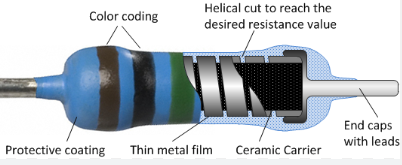
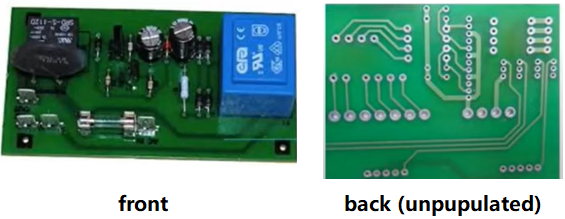
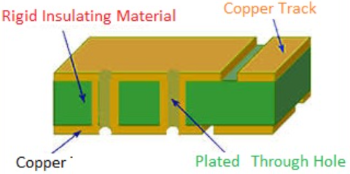
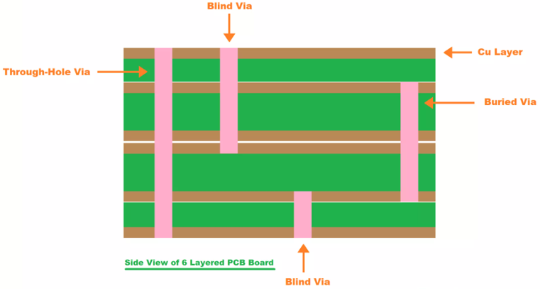
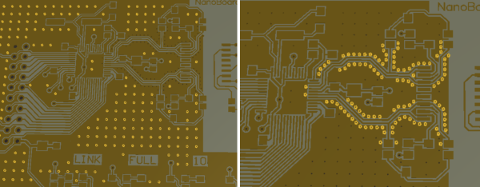

- Resistor最大的用处就是控制电流。用Water Analogy，就是控制水流速度在一个平缓的，可接受的范围内。起这个作用的resistor被称为current-limiting resistor。
- 另一个常见作用是voltage divider，在看电路图的时候如果能认出这个结构，就能猜测其功能。

点击这里看Water Analogy。
Single-sided PCB：
|
 |
Double-sided PCB:
|
 |
Multilayer PCB:

| Through-Hole vs SMT | 虽然surface mount technology更“先进”，但through-hole依然有一个重要的好处就是reliability。他的物理结构连得更稳，所以在military/aerospace这种经常有extreme accelerations, collisions and high temperatures的地方更常用。 |
| Via Filling | 意思是把via的hole给堵上。可能由于各种原因需要via filling，比如protect from dust, fill with conducting materials to increase the current carrying capacity等等。 |
| Gold Tabs | 对于经常make and break contact的surface，很容易wear out。比如说pushbutton，插daughter card的slot等等。这时可以往上加一层gold来延长寿命。 |
| Solder Mask | Green gloss LPISM (Liquid Photo Imageable Solder Mask)， PCB上最常见的绿膜，作用是prevent spilling of liquid solder，由于现在的IC越来越小，加一个solder mask方便solder，不会那么容易产生short。 |
| Line Width/Spacing | 常见表示法为6/6mils，代表minimum track width和minimum spacing。其中1 mil = 1/1000 inch = 0.0254mm |
| Fiducial | 中文为“基准点”，指的是PCB四个角上放的small pads，用来帮助Pick & Place machine定位。 |
| Stitching Vias | 指的是要把不同layer的large copper areas连起来时，可以用的一个technique。下左图体现了create strong vertical connection的效果。下右图则用于RF design中reduce crosstalk and EM interference，又称为Via shielding。 |
